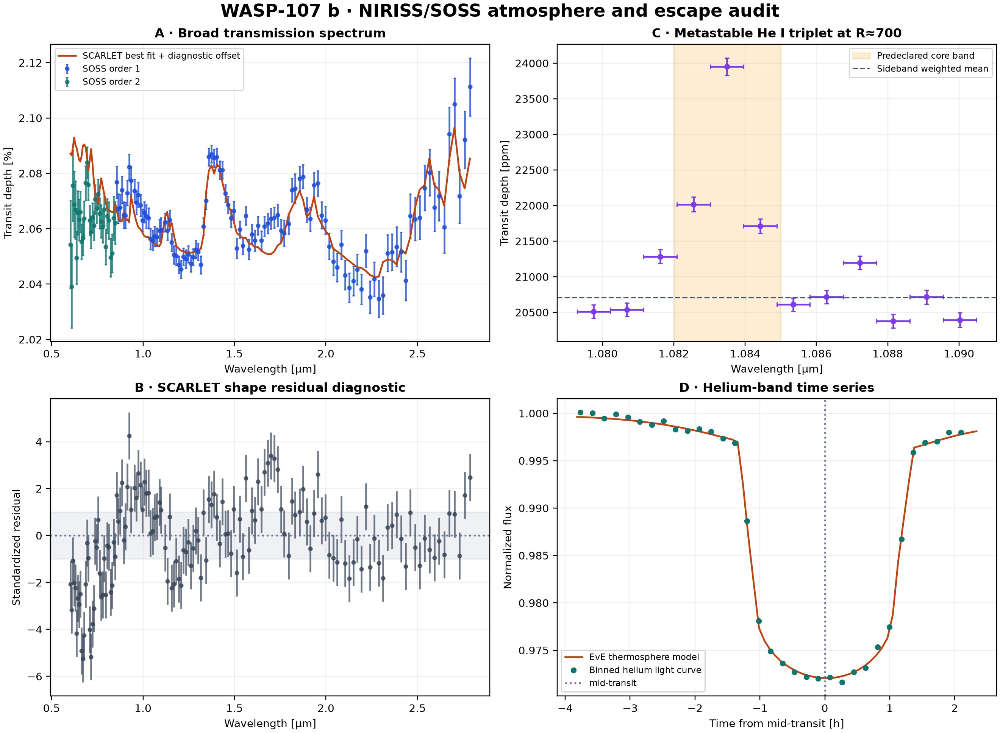

Data source notes
SHA-256, LF-normalised text
1208a878de0089bafc953e31c92658ff443ada2622dcba374ddbe58e59a8f5c4Browse 11 versioned evidence files. Table previews simply display stored rows. Consult the project report for the source, processing steps, and inference assumptions.

1208a878de0089bafc953e31c92658ff443ada2622dcba374ddbe58e59a8f5c4cbb986e4ca616abc587f1dcdbb2a31713c9c8db21193bf453659136b0c7b4b19c0698d28a65276f3011c7b676bd7295d6fb31b75f8ab0ffe81e1d0d89401c2095c91b07e6a27e9869918e5398e5333b6237a2e8d797f1f52e1e54468cf0fd6fe41bd0013435b70b5f1fe714f9c91f299d1e7f17441d2ca789b8dc786d5897c5ba3cb584dd22f683b0797d69e9a8411c038f90e0e11dd8ad64956d51416c2154dfd0595e895e5b27759f73c61c6b86a4d375d5bf39783e224820f27ab04dbd93a35d1fcb05264e6bb85318f88e0636b6d2c459d2eab1108b81a589b61e6d50ce8| quantity | value | unit |
|---|---|---|
| n_wavelength_bins | 143 | count |
| weighted_mean_transit_depth | 0.020620496896880426 | (Rp/Rs)^2 |
| weighted_mean_transit_depth_error | 3.692328426788103e-06 | (Rp/Rs)^2 |
| helium_n_bins | 12 | see quantity |
b90894ed9c8ea3cb7e21f24ccdb7cf204f3464d22eeab48a14b3c62d13838b51| wavelength_micron | order | depth | uncertainty | scarlet_plus_offset | residual_ppm | standardized_residual |
|---|---|---|---|---|---|---|
| 0.6036 | 2 | 0.0205428 | 0.00015865 | 0.020870978506262364 | -328.1785062623638 | -2.06856921690743 |
| 0.6102 | 2 | 0.0203914 | 0.0001496 | 0.02086479416172505 | -473.39416172504855 | -3.1643994767717145 |
| 0.6168 | 2 | 0.020755700000000002 | 0.0001285 | 0.02089455730191955 | -138.85730191954755 | -1.0806015713583468 |
| 0.6235 | 2 | 0.0206882 | 0.00011995 | 0.020929827211806726 | -241.62721180672614 | -2.014399431485837 |
6a1884b5393c0a4990bf13de4714d47b751f7878c530a98b6221a0da6aa7724e8db5b3a8aae18639948dc68304112f75a23ed2765f3a09a63e3028efab82f5e4SHA-256 values verify the stored files. They do not independently validate the scientific analysis. Rebuild this page with python scripts/evidence_catalog.py followed by python scripts/render_evidence_page.py.